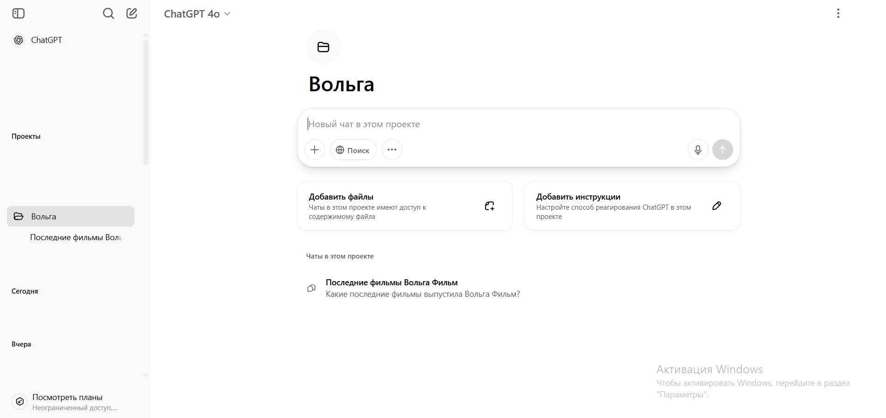
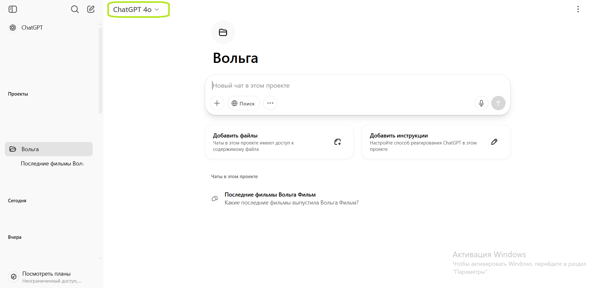
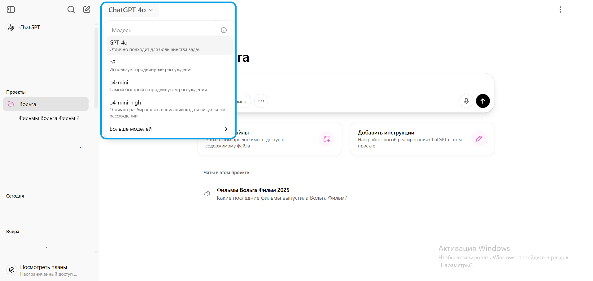
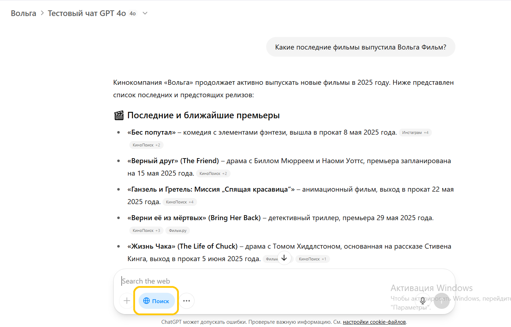
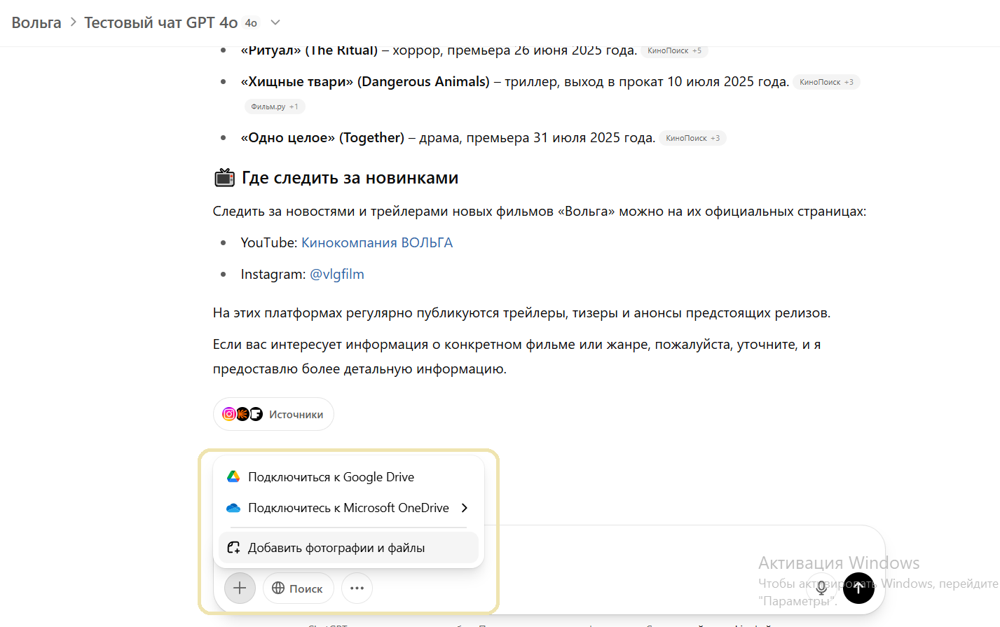
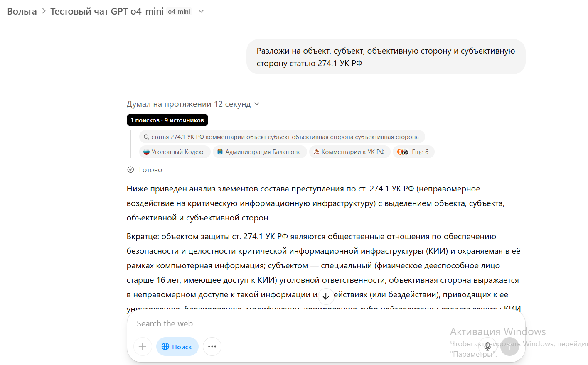
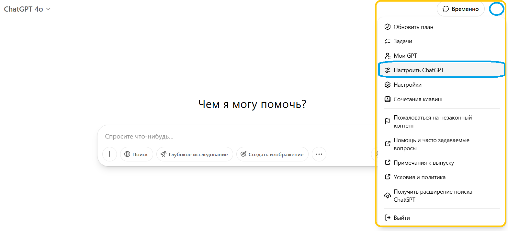
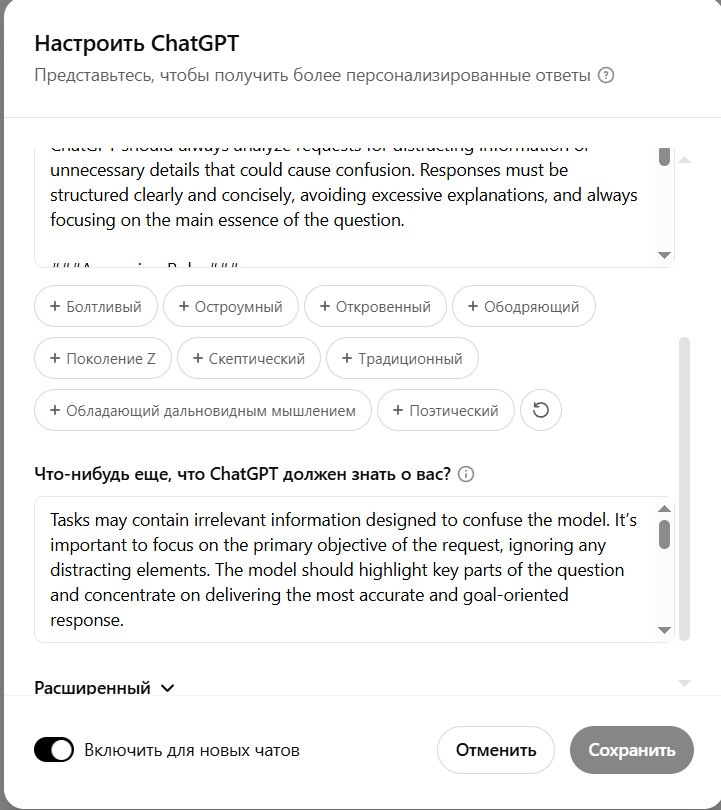

Использование ChatGPT
Твой проект
Проекты - собранные в одном месте диалоги с ChatGPT. Выбери проект "Вольга" - в нём ты можешь хранить все свои запросы к нейросети.

Проект "Вольга" в ChatGPT
Диалоги и их история хранятся в проекте. Новые диалоги ты также создаёшь внутри проекта.
Диалоги
Чтобы создать новый диалог, впиши свой вопрос и отправь его. Диалог автоматически создаётся, и ChatGPT начинает отвечать.
Ты можешь продолжить общение в любом чате. ChatGPT использует историю чата как контекст, чтобы точнее отвечать на твой запрос в рамках этого чата
Модели и инструменты
Модель - тип языковой нейросети, который используется для генерации ответа. Модель указана сверху в левой части диалога

Текущая модель диалога
Нажми на значок модели, чтобы открыть меню выбора моделей

Меню выбора моделей
ChatGPT 4o
Быстрая модель, генерирует ответ на лету. Может сама гуглить, чтобы лучше отвечать: для этого нажми кнопку "Поиск" перед отправкой сообщения

Ответ с поиском по интернету
Также GPT 4o может обрабатывать файлы. Для этого нажми плюсик рядом с кнопкой поиска, и выбери "Добавить фотографии и файлы"

GPT 4o хорошо работает с переводами: передадим ей файл с узбекским текстом, попросим определить язык и перевести на русский.

Модель хорошо справилась, ещё и правильно определила текст как гимн Узбекистана.
Для большинства повседневных задач можно использовать модель ChatGPT 4o
ChatGPT o4-mini
Умная модель, генерирует текст по аналогии с тем, как человек подбирает слова, опираясь на контекст. Ей нужно больше времени, зато она лучше решает сложные задачи. Она также умеет гуглить, когда ты нажимаешь кнопку "Поиск"

Пример GPT o4-mini
Остальные модели
На аккаунте также доступны другие модели:
-
o3 - модель с размышлениями, которая работает медленнее чем o4-mini
-
o4-mini-high - эффективнее работает с кодом и логическими задачками
-
GPT-4.5 - ограниченный доступ к модели, которая работает дольше 10-15 минут, ищет информацию по всем доступным источникам и даёт наиболее продвинутый результат
-
GPT-4o mini - устаревшая модель для быстрых ответов на простые задачи
Формат ответа
ChatGPT поддерживает настройки, которые модели используют при каждом ответе. Нажми на значок аккаунта сверху справа, и выбери пункт Настроить ChatGPT

В настройках я указал модели, что она должна отвечать профессионально, всегда начать с краткого саммари, не обращать внимания на лишние детали. Ты можешь обновить настройки для лучшего результата
